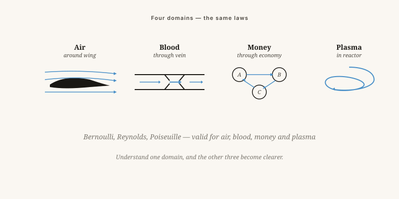

Everything flows — the mother of all science
Air, blood, money, ideas and plasma obey remarkably similar laws. Why does no school teach that?
By Jacobus van Merksteijn · 10 min read · 23 May 2026

The nature of flows — everything flows
Four domains, the same mathematics
Air around a wing. Blood through an artery. Money through an economy. Ideas through a society. Plasma in a fusion reactor. These are all flows, and flows follow laws that are remarkably similar regardless of the medium.
Why is this not taught? Because education is divided into subjects. Students of physics learn Navier-Stokes. Students of economics learn supply and demand. Students of medicine learn heart rate and circulation. Nobody learns that it is the same mathematics.
That is not laziness — it is institutional. Generalists are not promoted. Specialists are.

From ship coatings to democracy — the same principle
SeaSkin — not poison but smoothness
My coatings reduce the resistance of a ship's hull by keeping the boundary layer smooth. Fouling disturbs that boundary layer. The conventional solution was: poison in the paint. My solution: a surface on which fouling does not want to adhere — zwitterionic and silicone chemistry that mimics what shark skin has been doing for millions of years.
What does this have to do with democracy? The same principle. A society in which "fouling" — parasitism, regulatory burden, lobbying — cannot take hold flows faster and consumes less.
Not through force or exclusion, but through a different surface. Transparent, simple, predictable governance is smooth at the nanoscale. Anyone who tries to live parasitically on it slides off.
Four flow laws outside their discipline
Speed reduces pressure
In the air: lift under a wing. In an organisation: the faster information circulates, the less hierarchical pressure is needed to enforce decisions.
Beyond a threshold: chaos
Above a certain speed every flow becomes turbulent. In water, in air, in a meeting structure: beyond a certain size systems break into chaos. Pushing harder does not help — adjusting scale does.
Small blockage, large loss
Flow is inversely proportional to the fourth power of the radius. Halve the cross-section and the flow falls sixteen-fold. Small additions to the regulatory burden cost disproportionately large amounts of economic growth.
What goes in must come out
In blood: reduced circulation means accumulation. In money: capital that cannot flow out forms bubbles. In ideas: a society that cannot express itself eventually explodes.
Every system has its own frequency
Air at 1 bar has molecules that collide with each other every 60 nanoseconds. A human has a resonance frequency of 1 to 2 Hz. A building, a bridge, an organisation — every system has its own frequency.
Whoever gets two systems onto the same wavelength transfers energy and information faster. A teacher who does not reach their class is operating on the wrong frequency. An entrepreneur who finds no investor, likewise. The solution is usually not "broadcast harder" but "different signal".
Not one theory, but a lens — through which the world becomes coherent of its own accord.
Everything flows — the mother of all sciences
Air, blood, money, ideas, and plasma obey remarkably similar laws. Why does no school teach this?
Air around a wing, blood through an artery, money through an economy, ideas through a society, plasma in a fusion reactor — these are all flows, and flows follow laws that are strikingly similar regardless of the medium. Why is this not taught? Because education is divided into subjects. Physics students learn Navier-Stokes. Economics students learn supply and demand. No one learns that it is the same mathematics. Generalists are not promoted. Specialists are.
Four laws that apply beyond their home discipline: Bernoulli (velocity lowers pressure — in an organisation: the faster information circulates, the less hierarchical pressure is needed); Reynolds (above a threshold, every flow becomes turbulent — pushing harder does not help; adjusting scale does); Poiseuille (halve the cross-section and flow drops by a factor of sixteen — small regulatory burdens cost disproportionately large amounts of economic growth); and the continuity principle (what goes in must come out — capital that cannot flow out forms bubbles).
The SeaSkin example makes it concrete: the coating keeps the boundary layer of a ship's hull smooth without biocides. The same principle applies to governance — a transparent, simple system is smooth at the nano-scale. Anyone attempting to live parasitically on it slides off.
Frequency
Every system has its own frequency. Air at 1 bar contains molecules that collide every 60 nanoseconds. A teacher who cannot reach her class is broadcasting on the wrong frequency. The solution is rarely "transmit louder" and almost always "try a different signal." Fluid dynamics is not one theory among many — it is a pair of spectacles through which the world becomes coherent on its own.